전기산업기사 (2013-03-10 기출문제)
1과목: 전기자기학
1. 비유전율이 2.4인 유전체 내의 전계의 세기가 100[mV/m]이다. 유전체에 저축되는 단위체적당 정전에너지는 몇[J/m3]인가?
- 1.06×10-13
- 1.77×10-13
- 2.32×1013
- 2.32×1011
(정답률: 76%)

2. 자계 내에서 도선에 전류를 흘려보낼 때, 도선을 자계에 대해 60도의 각으로 놓았을 때 작용하는 힘은 30도의 각으로 놓았을 때 작용하는 힘의 몇 배인가?
- 2
- √2
- √3
- 4
(정답률: 74%)
3. 간격 50[cm]인 평행 도체판 사이에 10[Ω/m]인 물질을 채웠을 때 단위 면적당의 저항은 몇 [Ω]인가?
- 1[Ω]
- 5[Ω]
- 10[Ω]
- 15[Ω]
(정답률: 84%)
4. 도체가 관통하는 자속이 변하든가 또는 자속과 도체가 상대적으로 운동하여 도체내의 자속이 시간적 변화를 일으키면 이 변화를 막기 위하여 도체 내에 국부적으로 형성되는 임의의 폐회로를 따라 전류가 유기되는데 이 전류를 무엇이라 하는가?
- 히스테리시스전류
- 와전류
- 변위전류
- 과도전류
(정답률: 78%)
5. 공기 중에서 1[V/m]의 크기를 가진 정현파 전계에 대한 변위전류 1[A/m2]를 흐르게 하기 위해서는 이 전계의 주파수가 몇 [MHz]가 되어야 하는가?
- 1500[MHz]
- 1800[MHz]
- 15000[MHz]
- 18000[MHz]
(정답률: 57%)
6. 길이 l[m]인 도선으로 원형코일을 만들어 일정한 전류를 흘릴 때, M회 감았을 때의 중심자계는 N회 감았을 때의 중심자계의 몇 배 인가?
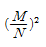
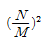
- N/M
- M/N
(정답률: 71%)
7. 도체 표면의 전류 밀도가 커지고 도체중심으로 갈수록 전류 밀도가 작아지는 효과는?
- 표피효과
- 홀효과
- 펠티에효과
- 제벡효과
(정답률: 85%)
8. 비투자율 μs, 자속밀도 B인 자계 중에 있는 m[Wb]의 점 자극이 받는 힘[N]은?
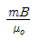
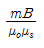
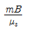
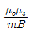
(정답률: 86%)
9. 환상 철심에 감은 코일에 5[A]의 전류를 흘리면 2000[AT]의 기자력이 생긴다면 코일의 권수는 얼마로 하여야 하는가?
- 10000
- 5000
- 400
- 250
(정답률: 81%)
10. 자속의 연속성을 나타내는 식은?
- B=μH
- ∇ ㆍ B =0
- ∇ ㆍ B=p
- ∇ ㆍ B=μH
(정답률: 78%)
11. 1.2[kW]의 전열기를 45분간 사용할 때 발생한 열량[kcal]은?
- 471
- 572
- 673
- 774
(정답률: 60%)
12. 그림과 같이 공기 중에서 1[m]의 거리를 사이에 둔 2점 A,B에각각3×10-4[Wb]와-3×10-4[Wb] 의 점자극을 두었다. 이때 점 P에 단위 정(+)자극을 두었을 때 이 극에 작용하는 힘의 합력은 약 몇 [N]인가? (단,
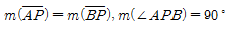
이다.)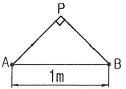
- 0
- 18.9
- 37.9
- 53.7
(정답률: 44%)
13. 그림과 같은 정전용량이 Co[F]되는 평행판 공기콘덴서의 판면적의 2/3되는 공간에 비유전율 ℇs인 유전체를 채우면 공기콘덴서의 정전용량은 몇 [F]인가?
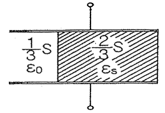
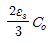
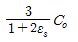
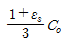
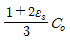
(정답률: 78%)
14. 중공도체의 중공부에 전하를 놓지 않으면 외부에서 준 전하는 외부 표현에만 분포한다. 이때 도체내의 전계는 몇 [V/m]가 되는가?
- 0
- 4π
- ∞
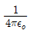
(정답률: 87%)
15. 일반적으로 자구(magnetic domain)를 가지는 자성체는?
- 강자성체
- 유전체
- 역자성체
- 비자성체
(정답률: 84%)
16. 자유 공간을 통과하는 전자파의 전파속도 v 는? (단, ℇ0:자유공간의 유전율, μ0:자유공간의 투자율)
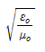
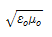
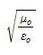
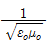
(정답률: 76%)
17. 다음 중 맥스웰의 전자 방정식으로 옳지 않은 것은?
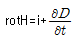
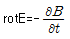
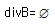
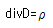
(정답률: 78%)
18. 그림과 같이 도체구 내부 공동의 중심에 점전하 Q[C]가 있을 때 이 도체구의 외부로 발산되어 나오는 전기력선의 수는 몇 개인가? (단, 도체내외의 공간은 진공이라 한다.)
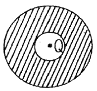
- 4π
- Q/ℇ0
- Q
- ℇ0Q
(정답률: 74%)
19. 용량계수와 유도계수에 대한 성질 중에서 틀린 것은?
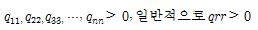
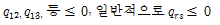
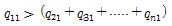
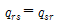
(정답률: 70%)
20. 대전된 구도체를 반지름이 2배가 되는 대전이 되지 않은 구도체에 가는 도선으로 연결할 때 원래의 에너지에 대해 손실된 에너지의 비율은 얼마가 되는가? (단, 구도체는 충분히 떨어져 있다고 한다.)
- 1/2
- 1/3
- 2/3
- 2/5
(정답률: 48%)
2과목: 전력공학
21. 차단기의 소호재료가 아닌 것은?
- 수소
- 기름
- 공기
- SF6
(정답률: 75%)
22. 3상 배전선로의 전압강햐율을 나타내는 식이 아닌 것은? (단, Vs:송전단 전압, Vr:수전단 전압, I :전부하전류 P:부하전력, Q:무효전력 이다.)
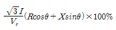
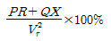
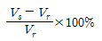
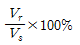
(정답률: 66%)
23. 송전단 전압을 Vs, 수전단 전압을 Vr, 선로의 직렬 리액턴스를 X 라 할 때 이 선로에서 최대 송전전력은? (단, 선로 저항은 무시한다.)
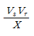
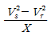
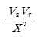
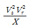
(정답률: 67%)
24. 전선의 굵기가 균일하고 부하가 균등하게 분산 분포되어있는 배전선로의 전력손실은 전체 부하가 송전단으로부터 전체 전선로 길이의 어느 지점에 집중되어 있을 경우의 손실과 같은가?
- 3/4
- 2/3
- 1/3
- 1/2
(정답률: 52%)
25. 선로의 전압을 25[KV]에서 50[KV]로 승압할 경우, 공급전력을 동일하게 취급하면 공급전력은 승압전의 ( ➀ )배로 되고, 선로 손실은 승압 전의 ( ➁ )배로 된다. (단, 동일 조건에서 공금 전력과 선로 손실률을 동일하게 취급함)
- ① 1/4, ② 2
- ① 1/4, ② 4
- ① 2, ② 1/4
- ① 4, ② 1/4
(정답률: 65%)
26. 전력 퓨즈(POWER FUSE)의 특성이 아닌 것은?
- 현저한 한류특성이 있다.
- 부하전류를 안전하게 차단한다.
- 소형이고 경량이다.
- 릴레이나 변성기가 불필요하다.
(정답률: 57%)
27. 발전기의 자기여자현상을 방지하기 위한 대책으로 적합하지 않은 것은?
- 단락비를 크게 한다.
- 포화율을 작게 한다.
- 선로의 충전전압을 높게 한다.
- 발전기 정격전압을 높게 한다.
(정답률: 45%)
28. 차단기에서 'O-t1-CO-t2-CO" 의 표기로 나타내는 것은? (단, O:차단 동작, t1, t2:시간 간격, C:투입동작, CO:투입 직후 차단)
- 차단기 동작 책무
- 차단기 재폐로 계수
- 차단기 속류 주기
- 차단기 무전압 시간
(정답률: 77%)
29. 화력발전소에서 탈기기의 설치 목적으로 가장 타당한 것은?
- 급수 중의 용해 산소의 분리
- 급수의 습증기 건조
- 연료 중의 공기제거
- 염류 및 부유물질 제거
(정답률: 70%)
30. 3상의 같은 전원에 접속하는 경우, △결선의 콘덴서를 Y결선으로 바꾸어 연결하면 진상용량은?
- √3배의 진상용량이 된다.
- 3배의 진상용량이 된다.
- 1/√3의 진상용량이 된다.
- 1/3의 진상용량이 된다.
(정답률: 64%)
31. 수력발전소의 조압 수조(서지 탱크)설치 목적은?
- 수차 보호
- 흡출관 보호
- 수격작용 흡수
- 조속기 보호
(정답률: 56%)
32. 전압이 일정값 이하로 되었을 때 동작하는 것으로서 단락시 고장 검출용으로도 사용되는 계전기는?
- 재폐로 계전기
- 역상 계전기
- 부족 전류 계전기
- 부족 전압 계전기
(정답률: 79%)
33. 전력계통의 전압조정과 무관한 것은?
- 변압
- 발전기의 전압조정장치
- MOF
- 동기 조상기
(정답률: 66%)
34. 송배전 선로의 도중에 직렬로 삽입하여 선로의 유도성 리액턴스를 보상함으로서 선로정수 그 자체를 변화시켜서 선로의 전압강하를 감소시키는 직렬콘덴서방식의 특성에 대한 설명으로 옳은 것은?
- 최대 송전전력이 감소하고 정태 안정도가 감소된다.
- 부하의 변동에 따른 수전단의 전압변동률은 증대된다.
- 장거리 선로의 유도 리액턴스를 보상하고 전압강하를 감소시킨다.
- 송·수 양단의 전달 임피던스가 증가하고 안정 극한 정력이 감소한다.
(정답률: 66%)
35. 배전반 및 분전반의 설치장소로 가장 적당한 곳은?
- 벽장 내부
- 화장실 내부
- 노출된 장소
- 출입구 신발장 내부
(정답률: 76%)
36. 배전선로의 접지 목적과 거리가 먼 것은?
- 고장전류의 크기 억제
- 고저압 혼촉, 누전, 접촉에 의한 위험 방지
- 이상전압의 억제, 대지전압을 저하시켜 보호 장치 작동 확실
- 피뢰기 등의 뇌해 방지 설비의 보호 효과 향상
(정답률: 62%)
37. 철탑의 탑각 접지저항이 커질 때 생기는 문제점은?
- 속류 발생
- 역섬락 발생
- 코로나 증가
- 가공지선의 차폐각 증가
(정답률: 81%)
38. 전선 양측의 지지점의 높이가 동일할 경우 전선의 단위 길이당 중량을 W[kg], 수평장력을 T[kg], 경간을 S[m], 전선의 이도를 D[m]라 할 때 전선의 실제길이 L[m]를 계산하는 식은?
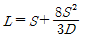
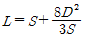
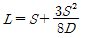
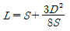
(정답률: 74%)
39. 22.9[KV-Y] 배전 선로의 보호 협조기기가 아닌 것은?
- 컷아웃 스위치
- 인터럽터 스위치
- 리클로저
- 섹셔널라이저
(정답률: 59%)
40. 뒤진 역률 80[%], 1000[KW]의 3상 부하가 있다. 여기에 콘덴서를 설치하여 역률을 95[%]로 개선하려면 콘덴서의 용량[KVA]은?
- 328[KVA]
- 421[KVA]
- 765[KVA]
- 951[KVA]
(정답률: 63%)
3과목: 전기기기
41. 정격출력 p[kW], 회전수 N[rpm]인 전동기의 토크[kg·m]는?
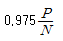
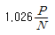
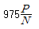
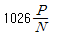
(정답률: 60%)
42. 트랜지스터에 비해 스위칭 속도가 매우 빠른 이점이 있는 반면에 용량이 적어서 비교적 저전력용에 주로 사용되는 전력용 반도체 소자는?
- SCR
- GTO
- IGBT
- MOSFET
(정답률: 65%)
43. 변압기에 사용하는 절연유의 성질이 아닌 것은?
- 절연 내력이 클 것
- 인화점이 높을 것
- 점도가 클 것
- 냉각효과가 클 것
(정답률: 75%)
44. 단권변압기의 3상 결선에서 △결선인 경우, 1차측 선간전압 V1, 2차측 선간전압 V2 일 때 단권변압기의 자기용량/부하용량은? (단, V1 ＞V2인 경우이다.)
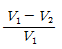
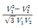
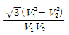
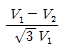
(정답률: 52%)
45. 75[W]이하의 소 출력으로 소형 공구, 영사기, 치과의료용 등에 널리 이용되는 전동기는?
- 단상 반발 전동기
- 3상 직권정류자 전동기
- 영구자석 스텝전동기
- 단상 직권정류자 전동기
(정답률: 74%)
46. 직류발전기의 구조가 아닌 것은?
- 계자 권선
- 전기자 권선
- 내철형 철심
- 전기자 철심
(정답률: 76%)
47. 3상 유도전동기의 원선도 작성시 필요한 시험이 아닌것은?
- 슬립 측정
- 무부하 시험
- 구속 시험
- 고정자권선의 저항 측정
(정답률: 76%)
48. 주파수 60[Hz], 슬립 3[%], 회전수 1164[rpm]인 유도전동기의 극수는?
- 4
- 6
- 8
- 10
(정답률: 75%)
49. 4극 60[Hz]의 3상 동기발전기가 있다. 회전자의 주변속도를 200[m/s] 이하로 하려면 회전자의 최대 직경을 약 몇[m]로 하여야 하는가?
- 1.5
- 1.8
- 2.1
- 2.8
(정답률: 64%)
50. 동기전동기에서 제동권선의 역할에 해당되지 않는 것은?
- 기동 토크를 발생한다.
- 난조 방지작용을 한다.
- 전기자반작용을 방지한다.
- 급격한 부하의 변화로 인한 속도의 요동을 방지한다.
(정답률: 52%)
51. 유도전동기에서 부하를 증가시킬 때 일어나는 현상에 관한 설명 중 틀린 것은? (단, ns:회전자계의 속도, n:회전자의 속도이다.)
- 상대속도 (ns-n) 증가
- 2차 전류 증가
- 토크 증가
- 속도 증가
(정답률: 47%)
52. 비철극(원통)형 회전자 동기발전기에서 동기리액턴스 값이 2배가 되면 발전기의 출력은?
- 1/2로 줄어든다.
- 1배이다.
- 2배로 증가한다.
- 4배로 증가한다.
(정답률: 55%)
53. 직류 전동기의 실측효율을 측정하는 방법이 아닌 것은?
- 보조 발전기를 사용하는 방법
- 프로니 브레이크를 사용하는 방법
- 전기 동력계를 사용하는 방법
- 블론델법을 사용하는 방법
(정답률: 56%)
54. 2극 단상 60[Hz]인 릴럭턴스(reluctance) 전동기가 있다. 실효치 2[A]의 정현파 전류가 흐를 때 발생 토크의 최대 값[Nm]은? (단, 직축(Ld) 및 횡축(Lq) 인덕턴스는 Ld=2Lq=200[mH]이다.)
- 0.1
- 0.5
- 1.0
- 1.5
(정답률: 31%)
55. 동일 정격의 3상 동기발전기 2대를 무부하로 병렬 운전하고 있을 때 두 발전기의 기전력 사이에 30°의 위상차가 있으면 한 발전기에서 다른 발전기에 공급되는 유효전력은 몇 [kW]인가? (단, 각 발전기의(1상의) 기전력은 1000[V], 동기 리액턴스는 4[Ω]이고, 전기자 저항은 무시한다.)
- 62.5
- 62.5×√3
- 125.5
- 125.5×√3
(정답률: 55%)
56. 3상 유도전동기의 슬립과 토크의 관계에서 최대 토크를 Tm, 최대 토크를 발생하는 슬립을 St, 2차 저항이 R2일 때의 관계는?
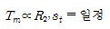
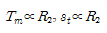
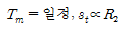
(정답률: 63%)
57. 50[kW], 610[V], 1200[rpm]의 직류 분권전동기가 있다. 70[%] 부하일 때 부하전류는 100[A], 회전 속도는 1240[rpm]이다. 전기자 발생 토크[kg·m]는? (단, 전기자 저항은 0.1[Ω]이고, 계자 전류는 전기자 전류에 비해 현저히 작다.)
- 약 39.3
- 약 40.6
- 약 47.17
- 약 48.75
(정답률: 46%)
58. 변압기 온도시험을 하는 데 가장 좋은 방법은?
- 반환 부하법
- 실 부하법
- 단락 시험법
- 내전압 시험법
(정답률: 67%)
59. 변압기 결선방법 중 3상 전원을 이용하여 2상 전압을 얻고자 할 때 사용할 결선 방법은?
- Fork 결선
- Scott결선
- 환상 결선
- 2중 3각 결선
(정답률: 75%)
60. 동기 발전기의 전기자 권선법 중 집중권에 비해 분포권의 장점에 해당되는 것은?
- 기전력의 파형이 좋아진다.
- 난조를 방지 할 수 있다.
- 권선의 리액턴스가 커진다.
- 합성유도기전력이 높아진다.
(정답률: 74%)
4과목: 회로이론
61. 다음과 같이 변환시 R1+R2+R3의 값[Ω]은? (단, Rab=2[Ω], Rbc=4[Ω]Rca=6[Ω]이다.)
- 1.57[Ω]
- 2.67[Ω]
- 3.67[Ω]
- 4.87[Ω]
(정답률: 55%)
62. 그림과 같은 회로에서 t=0일 때 스위치 K를 닫을 때 과도 전류 I(t)는 어떻게 표시되는가?
(정답률: 47%)
63. 그림과 같은 4단자 회로망에서 어드미턴스 파라미터 Y12[℧]는?(오류 신고가 접수된 문제입니다. 반드시 정답과 해설을 확인하시기 바랍니다.)
(정답률: 46%)
64. 테브난의 정리를 이용하여 그림(a)의 회로를 (b)와 같은 등가회로로 만들려고 할 때 V와 R의 값은?
- V=12[V], R=3[Ω]
- V=20[V], R=3[Ω]
- V=12[V], R=10[Ω]
- V=20[V], R=10[Ω]
(정답률: 68%)
65. 저항 R1=10[Ω]과 R2=40[Ω]이 직렬로 접속된 회로에 100[V], 60[Hz]인 정현파 교류전압을 인가할 때, 이 회로에 흐르는 전류로 옳은 것은?
- √2sin377t[A]
- 2√2sin377t[A]
- √2sin422t[A]
- 2√2sin422t[A]
(정답률: 67%)
66. 다음 중 옳지 않은 것은?
(정답률: 71%)
67. 그림과 같은 4단자 회로망에서 출력측을 개방하니 V1=12[V], I1=2[A],V2=4[V]이고 출력측을 단락하니 V1=16[V], I1=4[A], I2=2[A]이었다. 4단자 정수 A, B, C, D는 얼마인가?
- A=2, B=3, C=8, D=0.5
- A=0.5, B=2, C=3, D=8
- A=8, B=0.5, C=2, D=3
- A=3, B=8, C=0.5, D=2
(정답률: 61%)
68. 대칭 3상 전압을 그림과 같은 평형 부하에 가할 때 부하의 역률은 얼마인가? (단, 이다.)
- 0.4
- 0.6
- 0.8
- 1.0
(정답률: 43%)
69. 두 점 사이에는 20[C]의 전하를 옮기는데 80[J]의 에너지가 필요하다면 두 점 사이의 전압은?
- 2[V]
- 3[V]
- 4[V]
- 5[V]
(정답률: 72%)
70. 대칭 3상전압을 공급한 3상 유도전동기에서 각 계기의 지시는 다음과 같다. 유도전동기의 역률은 얼마인가? (단, W1=1.2[kW], W2=1.8[kW], V=200[V], A=10[A]이다.)
- 0.70
- 0.76
- 0.80
- 0.87
(정답률: 53%)
71. 비정현파에서 정현 대칭의 조건은 어느 것인가?
- f(t)=f(-t)
- f(t)=-f(-t)
- f(t)=-f(t)
- f(t)=-f(t+T/2)
(정답률: 69%)
72. 그림과 같은 회로의 합성 인덕턴스는?
(정답률: 58%)
73. 코일에 단상 100[V]의 전압을 가하면 30[A]의 전류가 흐르고 1.8[KW]의 전력을 소비한다고 한다. 이 코일과 병렬로 콘덴서를 접속하여 회로의 합성 역률을 100[%]로 하기 위한 용량 리액턴스[Ω]는?
- 약 4.2[Ω]
- 약 6.8[Ω]
- 약 8.4[Ω]
- 약 10.6[Ω]
(정답률: 45%)
74. 100[V] 전압에 대하여 늦은 역률 0.8 로서 10[A]의 전류가 흐르는 부하와 앞선 역률 0.8로서 20[A]의 전류가 흐르는 부하가 병렬로 연결되어 있다. 전 전류에 대한 역률은 약 얼마인가?
- 0.66
- 0.76
- 0.87
- 0.97
(정답률: 29%)
75. 두 코일이 있다. 한 코일의 전류가 매초 40[A]의 비율로 변화할 때 다른 코일에는 20[V]의 기전력이 발생하였다면 두 코일의 상호인덕턴스는 몇 [H]인가?
- 0.2[H]
- 0.5[H]
- 1.0[H]
- 2.0[H]
(정답률: 65%)
76. 3상 불평형 전압에서 영상전압이 150[V]이고 정상전압이 600[V], 역상전압이 300[V]이면 전압의 불평형률[%]은?
- 60[%]
- 50[%]
- 40[%]
- 30[%]
(정답률: 72%)
77. tsinwt의 라플라스 변환은?
(정답률: 39%)
78. 의 라플라스 함수의 역변환의 값은?
(정답률: 58%)
79. RLC 직렬회로에서 t=0 에서 교류전압 e=Emsin(wt+θ)를 가할 때 이면 이 회로는?
- 진동적이다.
- 비진동적이다.
- 임계진동적이다.
- 비감쇠진동이다.
(정답률: 61%)
80. 전압 일 때 실효값은?
- 7.07[V]
- 10[V]
- 15[V]
- 20[V]
(정답률: 68%)
5과목: 전기설비기술기준 및 판단 기준
81. 특고압 가공 전선로를 제3종 특고압 보안공사에 의하여 시설하는 경우는?
- 건조물과 제1차 접근상태로 시설되는 경우
- 건조물과 제2차 접근상태로 시설되는 경우
- 도로 등과 교차하여 시설하는 경우
- 가공 약전류선과 공가하여 시설하는 경우
(정답률: 59%)
82. 가공 전선로의 지지물에 시설하는 지선의 안전율은 일반적인 경우 얼마 이상이어야 하는가?(오류 신고가 접수된 문제입니다. 반드시 정답과 해설을 확인하시기 바랍니다.)
- 1.8
- 2.0
- 2.2
- 2.5
(정답률: 51%)
83. 제1종 또는 제2종 접지공사에 사용하는 접지선을 사람이 접촉할 우려가 있는 곳에 시설하는 경우에 합성수지관 또는 이와 동등 이상의 절연효력 및 강도를 가지는 몰드로 접지선을 덮어야 하는가?
- 지하 30cm로부터 지표상 1.5m까지의 부분
- 지하 50cm로부터 지표상 1.8m까지의 부분
- 지하 90cm로부터 지표상 2.5m까지의 부분
- 지하 75cm로부터 지표상 2.0m까지의 부분
(정답률: 66%)
84. 400[V] 미만의 저압용 계기용변성기에 있어서 그 철심에서 몇 종 접지공사를 하여야 하는가?(오류 신고가 접수된 문제입니다. 반드시 정답과 해설을 확인하시기 바랍니다.)
- 특별 제3종 접지공사
- 제1종 접지공사
- 제2종 접지공사
- 제3종 접지공사
(정답률: 61%)
85. 저압 접촉전선을 절연 트롤리 공사에 의하여 시설하는 경우에 대한 기준으로 옳지 않은 것은? (단, 기계기구에 시설하는 경우가 아닌 것으로 한다.)
- 절연 트롤리선은 사람이 쉽게 접할 우려가 없도록 시설 할 것
- 절연 트롤리선의 개구부는 아래 또는 옆으로 향하여 시설할 것
- 절연 트롤리선의 끝 부분은 충전 부분이 노출되는 구조일 것
- 절연 트롤리선은 각 지지점에서 견고하게 시설하는 것 이외에 그 양쪽 끝을 내장 인류장치에 의하여 견고하게 인류할 것
(정답률: 68%)
86. 철도·궤도 또는 자동차도의 전용터널 안의 터널내 전선로의 시설방법으로 틀린 것은?
- 저압전선으로 지름 2.0[mm]의 경동선을 사용하였다.
- 고압전선은 케이블공사로 하였다.
- 저압전선을 애자사용공사에 의하여 시설하고 이를 레일면상 또는 노면상 2.5[m] 이상으로 하였다.
- 저압전선을 가요전선관공사에 의하여 시설하였다.
(정답률: 43%)
87. 강색 철도의 시설에 대한 설명으로 틀린 것은?
- 강색 차선은 지름 7[mm]의 경동선을 사용한다.
- 강색 차선의 레일면상 높이는 3[m]이상으로 한다.
- 강색 차선과 대지사이의 절연저항은 사용전압에 대한 누설 전류가 궤도의 연장 1[km]마다 10[mA]를 넘지 않는다.
- 레일에 접속하는 전선은 레일 사이 및 레일의 바깥쪽 30[cm]안에 시설하는 것 이외에는 대지로부터 절연한다.
(정답률: 43%)
88. 345[kV] 옥외 변전소에 울타리 높이와 울타리에서 충전부분까지 거리[m]의 합계는?
- 6.48
- 8.16
- 8.40
- 8.28
(정답률: 69%)
89. 고압 가공전선이 교류 전차선과 교차하는 경우, 고압 가공전선으로 케이블을 사용하는 경우 이외에는 단면적 몇 [mm2]이상의 경동연선을 사용하여야 하는가?
- 14
- 22
- 30
- 38
(정답률: 50%)
90. 고압 옥내배선이 다른 고압 옥내배선과 접근하거나 교차하는 경우 상호간의 이격거리는 최소 몇 [cm]이상이어야 하는가?
- 10
- 15
- 20
- 25
(정답률: 40%)
91. 가공 전선로에 사용하는 지지물의 강도계산에 적용하는 갑종 풍압하중을 계산할 때 구성재의 수직 투영면적 1[m2]에 대한 풍압의 기준이 잘못된 것은?
- 목주 : 588 pa
- 원형 철주 : 588 pa
- 원형 철근콘크리트주 : 882 pa
- 강관으로 구성(단주는 제외)된 철탑 : 1255 pa
(정답률: 67%)
92. 금속덕트 공사에 의한 저압 옥내배선에서, 금속덕트에 넣은 전선의 단면적의 합계는 덕트 내부 단면적의 몇 [%]이하이어야 하는가?
- 20
- 30
- 40
- 50
(정답률: 61%)
93. 가공 전선로의 지지물에 시설하는 통신선은 가공 전선과의 이격거리를 몇 [cm] 이상 유지하여야 하는가? (단, 가공전선은 고압으로 케이블을 사용한다.)(오류 신고가 접수된 문제입니다. 반드시 정답과 해설을 확인하시기 바랍니다.)
- 30
- 45
- 60
- 75
(정답률: 49%)
94. 주상변압기 전로의 절연내력을 시험할 때 최대 사용전압이 23000V인 권선으로서 중성점 접지식 전로(중성선을 가지는 것으로서 그 중성선에 다중접지를 한 것)에 접속하는 것의 시험전압은?
- 16560[V]
- 21160[V]
- 25300[V]
- 28750[V]
(정답률: 58%)
95. 교류식 전기철도의 전차선과 식물사이의 이격거리는 몇[m] 이상이어야 하는가?
- 1
- 1.5
- 2
- 2.5
(정답률: 52%)
96. 아파트 세대 욕실에 ‘비데용 콘센트’를 시설하고자 한다. 다음의 시설방법 중 적합하지 않는 것은?
- 충전 부분이 노출되지 않을 것
- 배선기구에 방습장치를 시설할 것
- 저압용 콘센트는 접지극이 없는 것을 사용할 것
- 인체감전보호용 누전차단기가 부착된 것을 사용할 것
(정답률: 75%)
97. 저압 및 고압 가공전선의 최소 높이는 도로를 횡단하는 경우와 철도를 횡단하는 경우에 각각 몇 [m] 이상이어야 하는가?
- 도로 : 지표상 6[m], 철도 : 레일면상 6.5[m]
- 도로 : 지표상 6[m], 철도 : 레일면상 6[m]
- 도로 : 지표상 5[m], 철도 : 레일면상 6.5[m]
- 도로 : 지표상 5[m], 철도 : 레일면상 6[m]
(정답률: 56%)
98. 유희용 전차에 전기를 공급하는 전로의 사용전압이 교류인 경우 몇 [V] 이하이어야 하는가?
- 20
- 40
- 60
- 100
(정답률: 45%)
99. 빙설이 적고 인가가 밀집된 도시에 시설하는 고압 가공전선로 설계에 사용하는 풍압하중은?
- 갑종 풍압하중
- 을종 풍압하중
- 병종 풍압하중
- 갑종 풍압하중과 을종 풍압하중을 각 설비에 따라 혼용
(정답률: 56%)
100. 저압 옥내배선 버스덕트공사에서 지지점간의 거리[m]는? (단, 취급자만이 출입하는 곳에서 수직으로 붙이는 경우)
- 3
- 5
- 6
- 8
(정답률: 41%)
정전에너지 = 0.5 x 유전율 x 전계의 세기2
여기서 유전율은 비유전율의 역수이므로 1/2.4 = 0.4167이다.
따라서,
정전에너지 = 0.5 x 0.4167 x (100[mV/m])2 = 1.04 x 10-13[J/m3]
이므로, 보기에서 정답은 "1.06×10-13"이다.